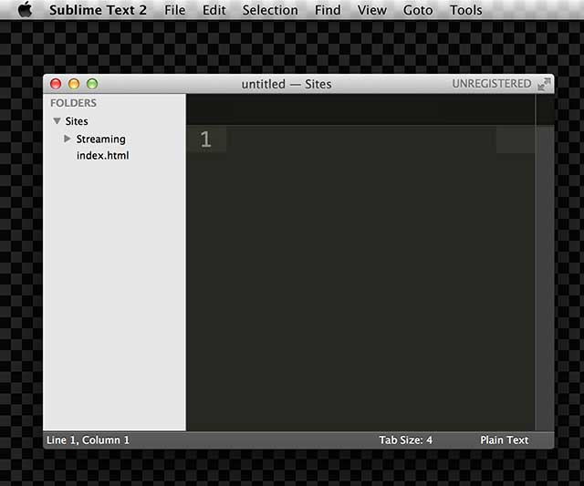
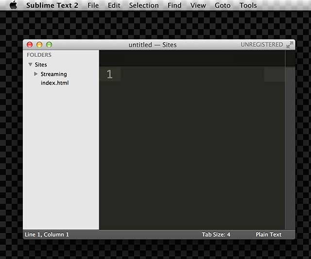

IML 400 Spring 2015
Storm Setup Instructions for Mac
In order to have a storm account, you need to have registered as a user in the USC MAP Portal. Once you've done this, a storm account will be created for you and you will be able to access your remote server to start building your IML 400 website.
You should also download your copy of Sublime Text, and have it available to you in your Dock.
These instructions assume you're using a mac. For windows or linux talk to your instructor. If you prefer to use FTP on Mac or Windows please read this file.
1. Open the Go menu in the Finder top bar and select Connect to Server.

2. A prompt will appear requesting server information. On Server Address you write storm.usc.edu and click Connect.

3. The connection process will start, and another prompt will ask you for credentials. This is when you will enter your USC MAP Portal username and password.

4. The next step will ask you for a volume to mount. This is the cool part where you will access yor portion of the Storm server as another hard drive in your computer. Choose the volume with your username in it.

5. Navigate in your Finder to the Sites directory inside your recently mounted Storm drive. The Sites directory is going to be the Root directory for your class website. Everything you put in there will be available online at the following URL: http://storm.usc.edu/~yourusername/. For IML 400, you can ignore all the directories next to Sites.

6. Grab your Sites directory and drag it into your Sublime Text icon in the Dock. By doing this, you will have your whole class website accesible to you from the Sublime Text user interface, and you will be ready to start coding.
 In Sublime Text you should be able to explore your Sites directory.

In Sublime Text you should be able to explore your Sites directory.

7. From within Sublime Text, select your index.html file and inspect it. Change it. Compare it with the rendered version in http://storm.usc.edu/~yourusername/index.html. Here is mine.

Think about the parallelism between Directories/Files and Websites/Webpages. What is a URL? What do you do when you access a non-HTML file in the web, like a PDF or an image? How will you structure your Sites directory to mirror the content in your class website?